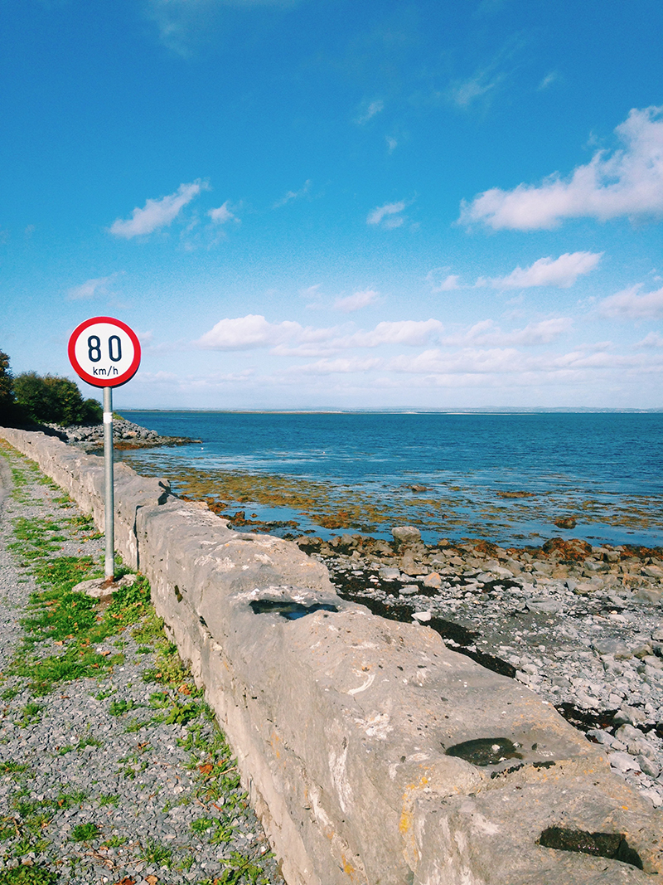
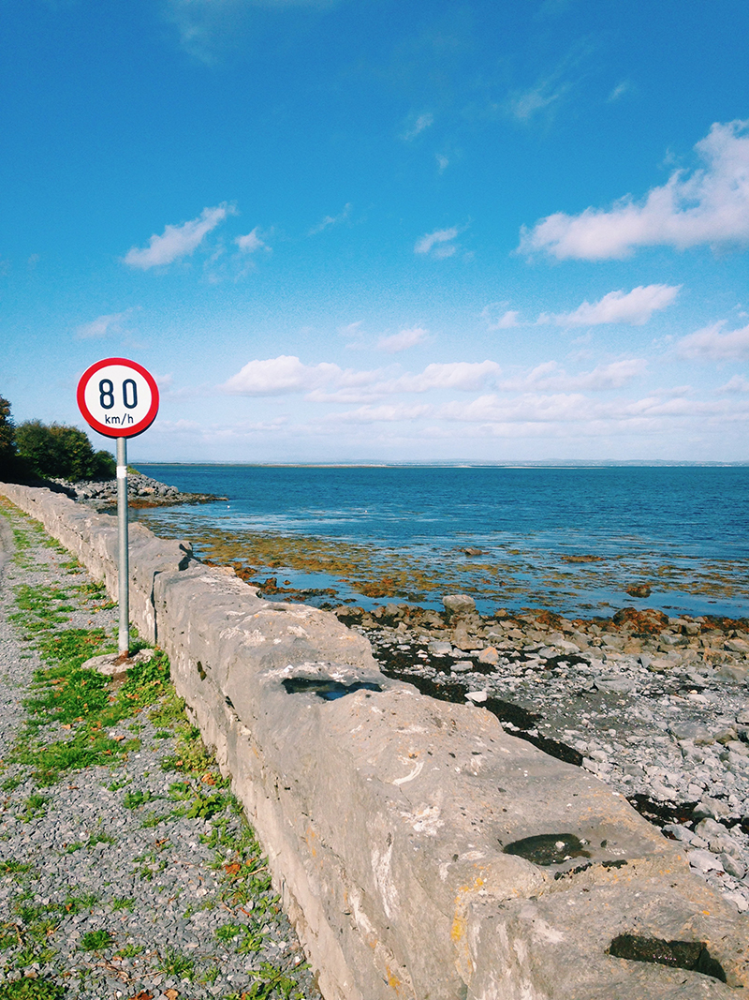

I dropped my pack off at my first hostel but couldn’t check in until 2:00 pm so I grabbed some coffee, got a city map, and walked about Dublin for about 7 hours.
I explored until the Guinness Storehouse opened. I couldn’t have been more excited to make my first tourist stop and drink my complimentary beer at the end of the exhibition. So I bought a student ticket and entered. I’ll be 29 in one month but luckily everyone in Ireland thought I was 22, which meant that a lot of things suddenly got cheaper. No complaints. Wait, sorry—1 complaint. The exhibition turned out to be the most boring part of the entire trip. But boy, oh boy, that pint of Guinness was the freshest, smoothest beer I’ve ever had. In my mind, I’d paid that €14 just to have this beer—but it turned out to be so awesome because I got to drink said beer in a sky bar that overlooks all of Dublin. So as I was forgetting all the details about how Arthur Guinness started brewing this famous Irish stout, I was looking down on this great city with the brightest sun shining my eyes and falling in love with this vacation.
One day in June, I had a random thought: “I want to start traveling again.” I’m not sure what triggered it—but that’s not really a problem I care to resolve. I just wanted to go somewhere. So I searched around and looked for places that had great weather in September. I found a bunch. But Ireland was it.
The next day, I bought a ticket to Dublin. I didn’t know what cities I’d go to. And I didn’t know what I’d do with my time. Admittedly, it was a little impulsive. But I knew I’d never regret traveling around Ireland for 9 days. I also don’t know why I wanted or needed to go alone. But all of this felt completely okay.
I prepared only a little. I bought a rain jacket and booked my hostels. I did minimal research knowing that once I got there, the locals would tell me exactly what I needed to do and see. When I landed in Dublin, it was 5:00 am and all I knew was that I needed euros. I waited at the airport for about an hour until a little light broke through the clouds and then caught the bus into City Centre.
I was told back in Dublin to get the fish and chips. I was told that it would be really delicious and fresh. Whoever told me that was so right. What that person didn’t tell me is that it would be expensive. But who cares—because I’ll always remember that one time I went to a beautiful, small town called Howth, met a cute guy named Paul, hiked up a green cliff, and had some amazing fish and chips.
That night was quite eventful also. I ran into someone I used to work with here in Brooklyn. She was staying in my hostel. When I saw her, I just stared for a few seconds before my confusion subsided. I’m still amazed at that coincidence—that someone I know was in the same foreign city at the same time. Bizarre. We didn’t waste any time getting to know each other again. We went out to Stag’s Head, a lovely gentleman’s bar, for a couple pints and cheap burritos. And I don’t care what anyone has to say about it. I still say that was the best barbacoa burrito I’ve ever had in my entire life. Man, that thing was good. It was really good.
Over the next 2 days, I traveled to 2 nearby towns. Bray was small and almost empty. But it had a beautiful beach where I stood in the light, warm breeze and collected mauve rocks from the shore that I could take home to my mom. I still haven&rsuqo;t given them to her but something tells me she’ll really appreciate them. I must have stayed in Bray for only an hour, but that day was like every other day in Ireland. It was long. It was full. It was glorious. And I was totally lost in space and time.
Howth—a little fisherman’s town. There, I found my first opportunity to use my SLR. I took a lot of ugly photos of ugly boats before I ran into Paul, a handsome Irishman who repairs all things electrical. He gave me his number and told me how to get to a cliff where I could hike for a couple hours. I definitely wasn’t planning to hike any cliffs that day but I couldn’t be happier that I had. Because when I got to the top, I saw a pretty Labrador just hanging out in the vast green. He was my friend only for a few minutes before I looked out at nature and traveled back down for lunch.

I spent those few days walking around and taking photos. I took some time and went to the Titanic Quarter and the museum. The museum was intended to just be a time filler, but it turned out to be really interesting. I learned a lot about the history of Belfast. I learned about how employment was such a struggle until the shipyard became successful and created a ton of jobs for men. I learned about how those men worked on those large ships to support their families but had horrible hearing because they were constantly surrounded by banging and drilling. And that those men worked such long hours so they lived in squalor, near that industrial shipyard. I learned about how luxurious the Titanic really was. Every detail in every design was so considered. Every creative decision from carpet to gold trim was so thoughtful. And at that scale? I hope I can someday be such an attentive and involved designer.
I went on to visit Belfast for a few days. One of my art directors told me, “Enjoy yourself but be careful in Belfast.” That scared me a little but I trusted myself. I know I’m smart and responsible and I felt that I’d be okay. I was right. And to be honest, I thought Belfast was so beautiful and peaceful. The republican/loyalist tension is no secret to anyone but what I experienced was a lot of calm. I felt settled. I loved going to local cafés for a latte and a little travel writing. I loved that I walked for hours and hours and the men would greet me by saying, “Hey, love.” One guy even offered me some weed. I didn’t take it. But I thought it was really nice.


Doolin was only a few miles from the Cliffs of Moher. The tour guide said that some people get out there in that vastness and figure out the meaning of life. That prospect scared me a little but no big deal because that didn’t happen. Not even close. Yes, the cliffs are great. They’re beautiful. There’s a castle there too. But after 8 days, I’d already seen how vibrantly green the island really is. And I’d seen so many castles and so many cliffs. So perhaps by this point, my attitude was a little tarnished but I really didn’t think it was that impressive. But damn it was a gorgeous day. It was 65 and sunny the entire time and that day, Ireland decided to keep in good spirits. The gift shop had vanilla ice cream so rich and cold. I spent half my dinner money on it but it was worth it. I went outside and ate it in the sun, looking out at the water. Then, I was a happy to be at those cliffs.
When I returned to Dublin, I’d already had a really great trip. I’d already done Galway. I’d already experienced the enormity of Giant’s Causeway. I’d already done a ton of small, yet fulfilling things that made me so damn happy—like that time I met those 4 high school kids smoking weed at that one train station and the one girl told me my hair was gorgeous. And she and her friends loved that I’m American and they invited me to hang out and talk. That was cool. But I still needed to go to the Cliffs of Moher because when you visit Ireland, that’s just what you do.
The easiest way to get there is through a tour company. But no worries—I got the student rate. I have to admit, that day is a bit of a blur. But I do remember Doolin, where we stopped to get lunch for an hour. I brought a sandwich with me because I was borderline broke but that worked out nicely. It meant that I got to eat in 5 minutes and then visit a really nice fudge shop. Maybe I was just hungry or maybe that fudge really was that incredible. I don’t know and I don’t care. The woman who worked there was super nice and gave me a few extra samples. I wish I could go back there any time.

 

I’d seen and done so much and at the end it came together. By the time I’d gotten to back to Dublin airport, I think I figured it out. More than anything, I think this trip was a confidence builder. It was something for me, on my terms, and paid for with my own money. I was alone and traveling by myself for 9 days but there wasn’t one moment when I felt an ounce of loneliness. I even cried a little a few times because I was just so full and happy. I can admit that. So when my plane took off for New York, I was ready. And there are a few things I brought back with me and I’m not talking about those beautiful, mauve rocks. I can’t really pinpoint what they are and that’s fine. It’s not really about that. As long as I’ve experienced some thing, some shift, some greatness and that I can always go back to that place in my mind, then I’m good. Totally good.